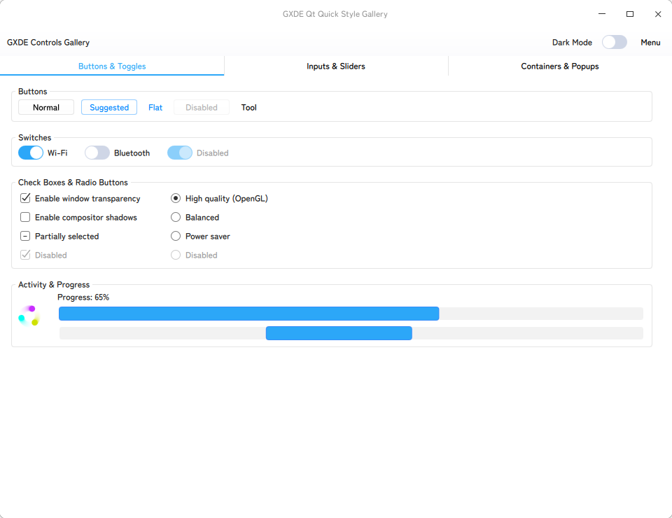

Loading...
Searching...
No Matches
GXTK7


GXTK 7
GXDE's Qt Quick UI plugin & component library.
Explore the docs »
View CI Status · Report Bug · Request Feature
Explore the docs »
View CI Status · Report Bug · Request Feature
About The Project

GXTK 7 is GXDE-OS's QtQuick UI library & style plugin that mimics Deepin's DTK2Widget library. It aims to bring the apperance of DTK2Widget back to the modern Qt6 Quick applications without need of DTK2Widget-Qt6 (I also made that library but I really want to retire that) library or any Qt private libraries.
Currently, GXTK7 is still in early development stage.
Built With
- Qt6 Core
- Qt6 Gui
- Qt6 Qml
- Qt6 Quick
- Qt6 QuickControls2
Getting Started
Prerequisites
You need a C++ compiler supporting C++17 and the Qt6 development packages installed on your system.
- Qt6 (Core, Gui, Qml, Quick, QuickControls2)
- CMake 3.20 or higher
Installation
Build Manually
First, create a build directory and build the project:
$ mkdir build
$ cd build
$ cmake ..
$ make
Then, you may run the example:
./examples/gallery/gxde_gallery
Build a Debian Package
Install the build dependencies, then build the binary package from the source root:
$ sudo apt build-dep .
$ dpkg-buildpackage -us -uc -b
This produces qml6-module-qtquick-controls-gxde, which installs the QtQuick.Controls.Gxde module into the system Qt QML directory.
Usage
Select the style by its full module name, either in C++:
QQuickStyle::setStyle("QtQuick.Controls.Gxde");
or through the environment:
$ QT_QUICK_CONTROLS_STYLE=QtQuick.Controls.Gxde ./your_app
The GxdeTheme singleton (import QtQuick.Controls.Gxde) switches between the light and dark schemes through its isDark property.
For more, please refer to the widget gallery example and the documentation.
Roadmap
- To provide basic QtQuick style.
Contributing
Top contributors:
License
GXTK7 is distributed under GNU GENERAL PUBLIC LICENSE Version 3. You may find a copy of the license here.
Acknowledgments
- DTK2Widget-Qt6: https://github.com/GXDE-OS/dtk2widget-qt6
- BEST-README-Template: https://github.com/othneildrew/Best-README-Template